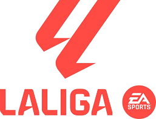
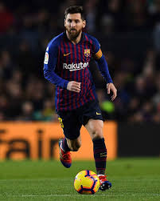
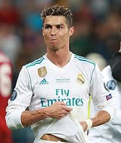

La Liga, cunoscută oficial ca LaLiga EA Sports, este prima ligă de fotbal profesionist din Spania. Fondată în 1929, este una dintre cele mai prestigioase ligi din lume, fiind cunoscută pentru stilul tehnic de joc și echipe de renume precum Real Madrid și FC Barcelona. Liga include 20 de echipe care concurează anual pentru titlul de campioană.
La Liga a fost scena unora dintre cele mai spectaculoase rivalități din fotbal, în special El Clásico dintre Real Madrid și FC Barcelona. De asemenea, este cunoscută pentru dezvoltarea unor jucători de excepție care au dominat fotbalul mondial.

Lionel Messi
FC Barcelona
Considerat unul dintre cei mai mari jucători din istorie.

Cristiano Ronaldo
Real Madrid
Star mondial, recorduri impresionante în La Liga.